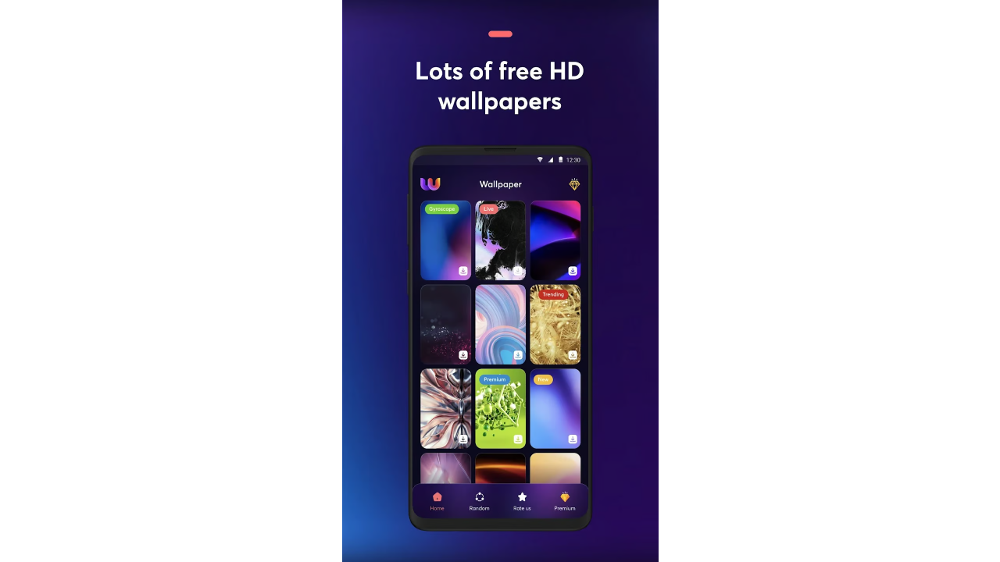

Amoled Wallpaper - A Collection of Wallpapers with Gyroscopic Control and Parallax Effect

I developed an app that offers an impressive collection of wallpapers featuring a live parallax effect controlled by the device's gyroscope. The app provides users with high-quality live wallpapers that adapt to their screens, creating a unique and interactive user experience. Key features include:
- Gyroscopic Control: The parallax effect creates depth and motion in the wallpapers based on the device's movement, giving the screen a dynamic and interactive appearance.
- High Quality: The app offers high-resolution wallpapers suitable for any screen size. Wallpapers are available in various resolutions, supporting all devices, including large screens.
- Continuous Improvement: We are constantly working on enhancing the app and expanding the wallpaper collection. Users can leave their comments and suggestions, which we gladly consider for future updates.
The app provides a seamless user experience through its simple interface and a diverse range of wallpapers that cater to all user preferences. Support for different resolutions ensures perfect display quality on any device.
Back